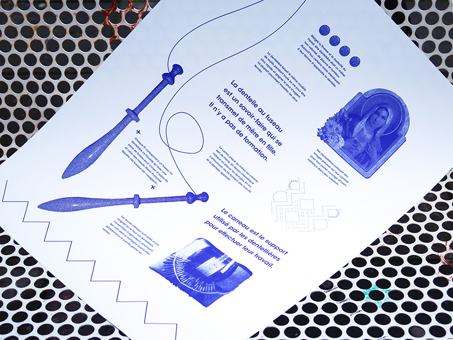
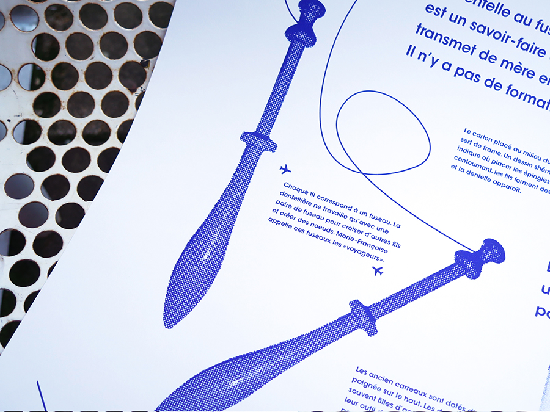
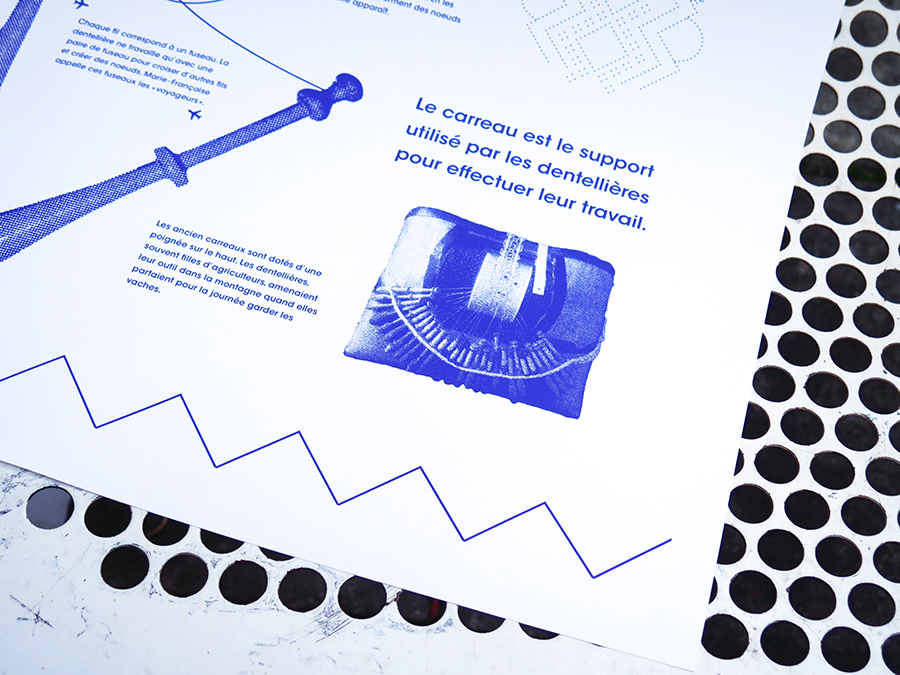
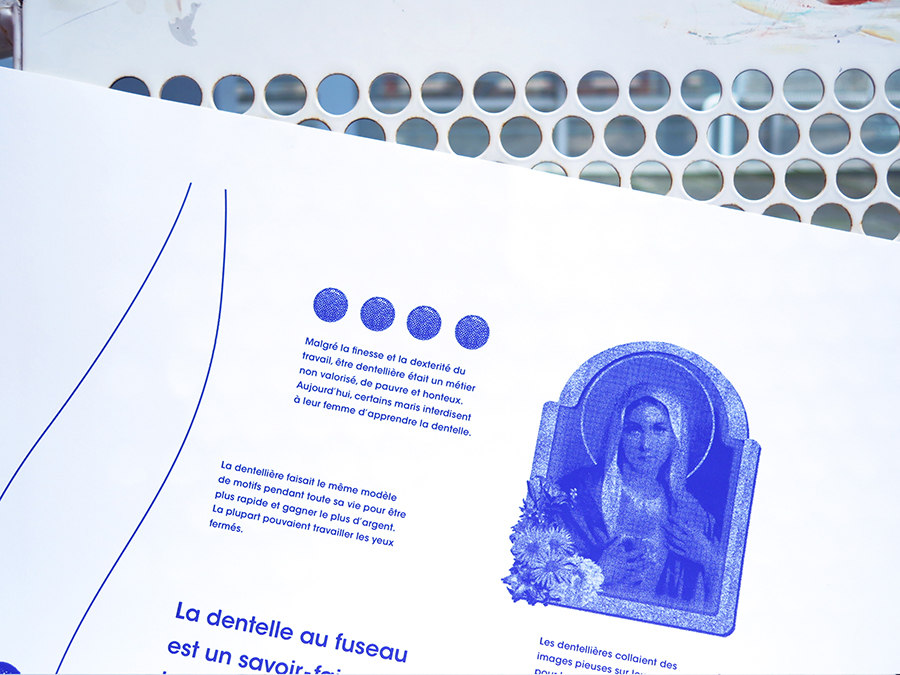
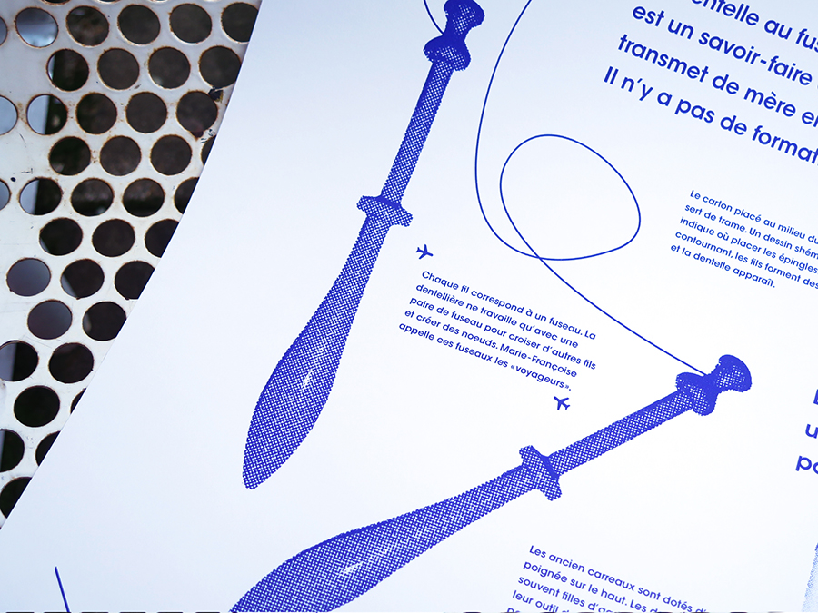
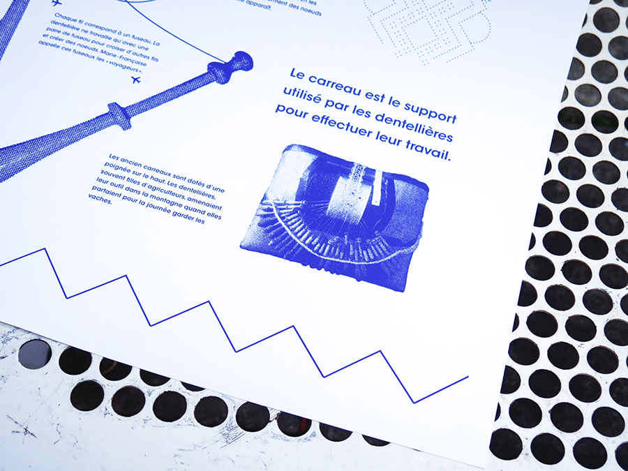
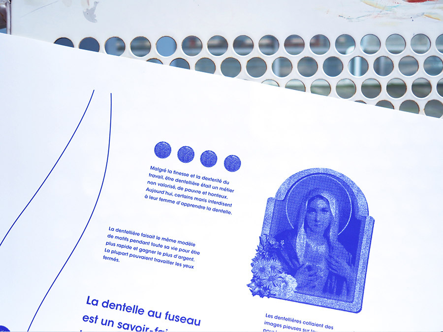

UNKNOW CRAFT
This poster highlights an unknown craft that I was curious
to know : the lacemaker.
Thanks to Marie-Françoise, I could learn how to do make laces and all the history around this handmade job.
December, 2016